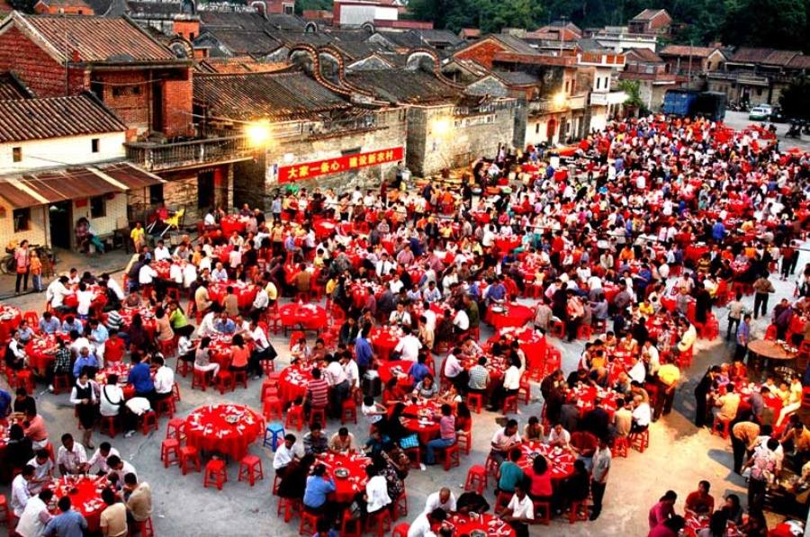
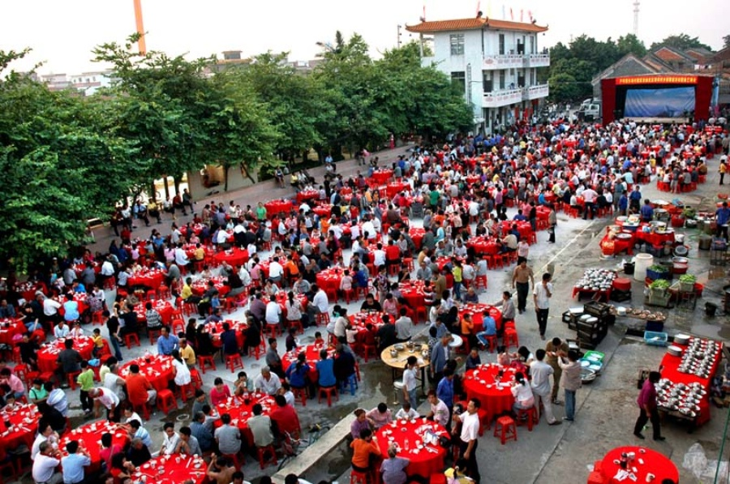

探究村宴在当代的人文意义——以顺德均安村宴为例
发表于：2016.9.9
随着城市化脚步和的不断加快和经济发展水平的不断提高，越来越多的年轻一代为了寻求更多的发展机会与更优质的生活水平，纷纷离开了土生土长的农村家乡，而家乡独有的味道似乎成为了连接游子与家乡的其中一条记忆链，使得游子身在远方仍保持着最淳朴的乡愁。俗话说得好“独在异乡为异客，每逢佳节倍思亲。”远在他乡的游子常年漂泊在外，也逐渐地产生了思乡情绪。而村宴在近年来充当着唤醒游子家乡味觉的这么一个角色，每逢端午、重阳、元宵等传统节日，村子里举办的村宴使得漂泊在外的游子回到那熟悉的乡土，与那曾经熟悉的乡亲们相会，更重要的就是能与家人团聚，村宴在当代正成为游子品尝家乡味道的一种媒介，从村宴上的可口佳肴中游子能品尝出的不仅仅是美味，还有那浓郁的乡愁情怀，使游子甚感欢喜。
正如对家乡的记忆一样，家乡味道是不会随着时间的流逝而失去的。游子群体在外漂泊的时间越长，对家乡的思念情感就会越发强烈，因为他们在外界很难找到归属感，那份专属于家乡的归属感。归属，即是指个体与所属群体间的一种内在联系，是某一个体对特殊群体及其从属关系的划定、认同、和维系，归属感则是这种划定、认同和维系的心理表现。归属感会让人的心理产生一种舒适与安定的情绪，让人会自然发出这样的感叹：“啊，这就是我要生活的地方！”。游子与家乡存在一种内在联系，这里的家乡包括家乡的一切（家乡的人、家乡食物、家乡景物、家乡文化等等），这些家乡元素都会使游子心理产生一种依赖感和认同感，也许就只有在家乡，他们才得以找到令自己疲惫不堪的心灵得以栖息的灵魂寄所。正所谓“落叶归根”，我想每个游子与家乡总有那么一种永不会断裂的情感联系链，无论身处何方，乡愁都会在游子心中占据一个位置。家乡并不会拒绝每一个本地人，家乡对当地人具有包容性，它包容接纳他们的需求，感到疲倦了就回家乡看看，那里是游子最好的加油站与避风港，当你想寻找对生活的意义最好的诠释，那就尝试着在家乡找答案吧，那里可能有你所需要的答案。每个土生土长的村民无论身处何方都想要在节日回来与亲朋好友吃上一顿村宴，也许原因就在于村宴这一家乡独有的食物元素使他们产生以上所述的归属感、依赖感和认同感，让他们感到身心上的愉悦。
在近几年的顺德均安的村宴上，从外国远道而回的华侨也纷纷表示要为家乡成立基金会，为家乡的建设事业奉献出自己的一份力。当地的许多华侨一去就是几十年，这一份远在他乡而难以割舍的乡愁是许多华侨所梦魂牵绕的。正是由于这顿村宴唤醒了游子远久的家乡记忆，“这道菜真好吃，我已经好久没吃过了。”这是在村宴上华侨说得最多的一句话。华侨华人也许能在外国的唐人街找到有家乡特色的食物，但却找不到家乡专属的那份味道，不管唐人街的厨师技艺多精湛也做不出家乡的那份味道。村宴上的食物都是该地区最有代表性的食物，这些食物也是无数华人华侨所朝思暮想的，承载着家乡味道的村宴也许是对归国华侨最好的心灵慰藉。

村宴承载着的美食记忆，是来自五湖四海的游子独有的。回到家乡品尝家乡的食物，其中包含着的乡愁，个中味道所包含的情感记忆也只有本地人才能品尝出。游子在经历过外界的种种事物后，回到自己的家乡，品尝一顿村宴，发现这份村子的情谊还没有改变，这时候，他也就明白了家乡是精神灵魂的栖息地，是最适合自己的地方。
下一篇：关于茶文化的知识
上一篇：浅析医药电商发展现状及未来展望
评论区
此路不通
1楼
评论时间：2016-11-20 18:12:32
回复看来我应该多努力些才行，要不然我的博客就这么一直没有流量下去，岂不是太过于冷冷清清了？
此路不通
1楼
评论时间：2016-11-20 18:12:32
回复看来我应该多努力些才行，要不然我的博客就这么一直没有流量下去，岂不是太过于冷冷清清了？
此路不通
1楼
评论时间：2016-11-20 18:12:32
回复看来我应该多努力些才行，要不然我的博客就这么一直没有流量下去，岂不是太过于冷冷清清了？
发表评论